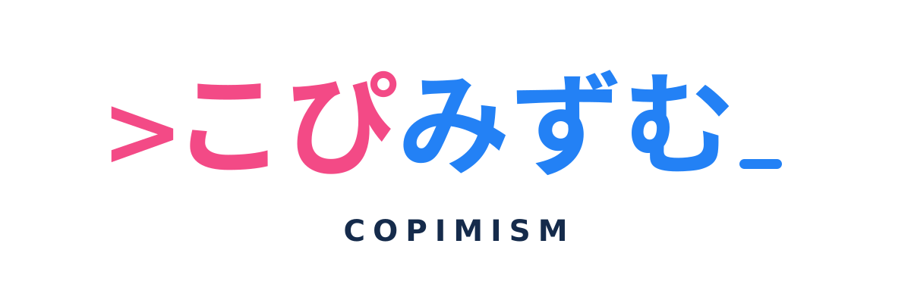

自動化の魔法使い～プログラミング研修を自動化しよう！～
講習型の研修を演習型へ切り替え、研修環境や課題を自動化する実践記録。

難しい技術も、まずは試してみる。コピーして、動かして、確かめて。そこから生まれた知識を、次の誰かが使える形で残すサークルです。
「コピペでできる技術の普及」を目的とした技術・創作・出版サークルです。仕事や日常で役立つ技術を、最初の一歩を踏み出しやすい形で紹介します。
名前の由来はコピミズム伝道教会。知識を独り占めせず、コピーして共有していくという発想に、ちょっとした遊び心を重ねています。なお、同教会の公式組織や関連団体ではありません。
単に貼り付けて終わりではなく、自分の環境で動かし、結果を確かめ、必要なら直す。そんな「ちゃんと使えるコピペ」を大事にします。
技術書典のこぴみずむサークルページに表示されている作品のみを掲載しています。各書籍の詳細は技術書典の商品ページをご覧ください。
講習型の研修を演習型へ切り替え、研修環境や課題を自動化する実践記録。
SES・受託開発・自社サービスの収益モデルを、働くエンジニアの視点で解説。
Python・Google Colab・VOICEVOXなどを使い、音声付き動画制作を試す一冊。
開発・管理・営業・運用などで起こりがちな失敗を、会話劇と解説で紹介。
生成AIの返答を検査・修正し、再利用できる成果物へ変える方法を扱う。
AI時代の開発を壊さないための要件・設計・実装・運用の考え方。
プロンプト設計、AIとの協働、創造的な仕事の進め方をまとめた実践ガイド。
家族の失踪とその後の出来事を題材にした実話ベースの作品。
※ 2026年10月29日時点の技術書典サークルページを参照。制作途中・未登録の書籍は掲載していません。各作品の購入可否・頒布条件はリンク先で確認してください。
活動に関するご連絡、掲載情報の訂正、ロゴの利用相談はGitHub Issuesからお願いします。公開の場に個人情報・秘密情報を投稿しないようご注意ください。
GitHub Issuesへ